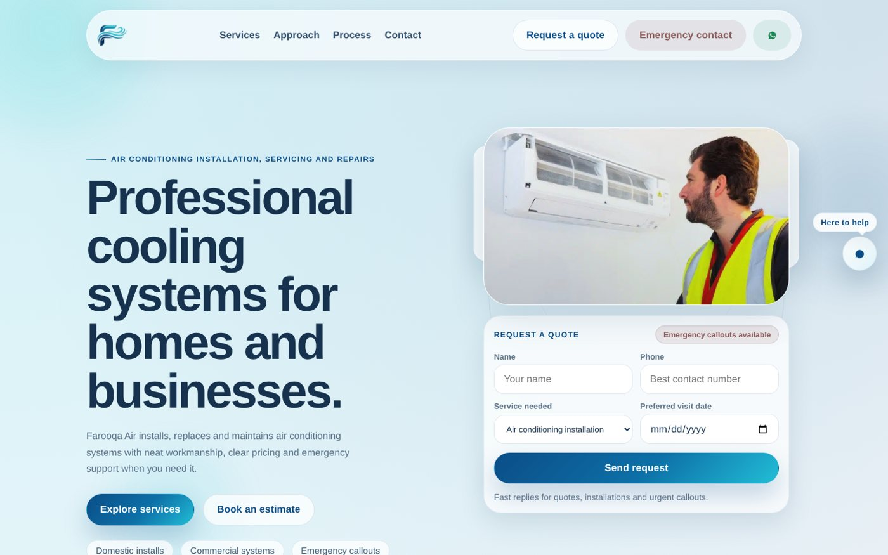

Web Development · Automation
HVAC Website & Chatbot
Lead-generation website with FAQ and customer enquiry intake chatbot.
The challenge
Customers need to report faults and request quotes quickly, while service teams need information about urgency, location and contact details.
Objective
Show how a local service business could turn site visits into structured enquiries and improve the information available for customer follow-up.
Approach
Built an HVAC website with service and trust information, quote pathways and a rule-based chatbot guiding fault reports, common FAQs and customer intake before human handover.
Outcomes
Delivered a working website and a rule-based chatbot that guides customers through fault reports, quote requests and follow-up details.
